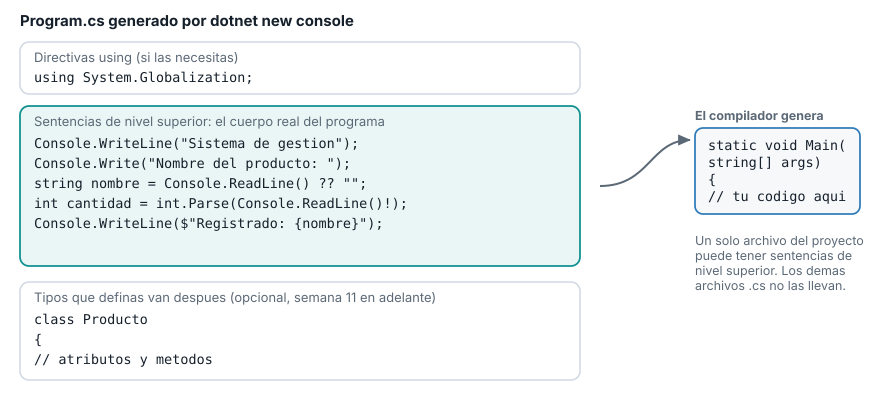
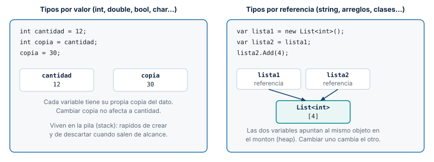
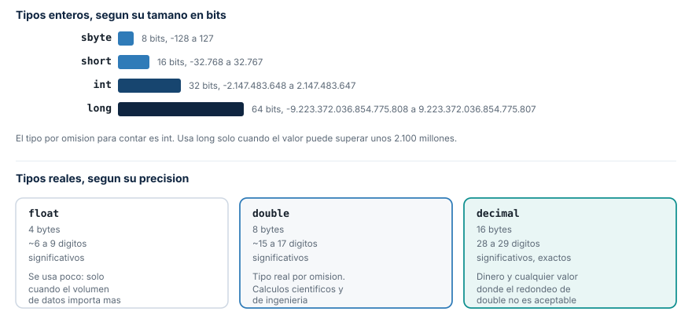
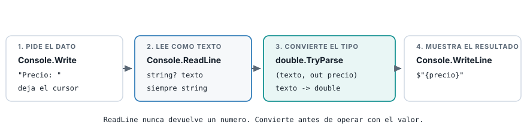
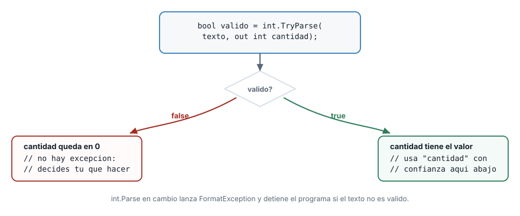

De HolaPascual al primer registro de datos
Institución Universitaria Pascual Bravo
Primera parte
Segunda parte
Program.cs y entiendes cada línea que ya escribiste.Todo lo de hoy alimenta el sistema de gestión que vas a construir el resto del semestre.
Pendiente de la Semana 1. El curso usa la consola con su configuración por defecto y evita tildes en lo que imprime, así que no necesitas nada especial para seguir el material.
Si quieres ver los acentos en tu propia consola, agrega esta línea antes del primer Console.WriteLine:

| Tu código usa | Firma que genera |
|---|---|
Ni return ni await |
static void Main(string[] args) |
Solo return |
static int Main(string[] args) |
Solo await |
static async Task Main(string[] args) |
return y await |
static async Task<int> Main(string[] args) |
Un solo archivo del proyecto puede tener sentencias de nivel superior.
| Regla | En C# |
|---|---|
| Fin de sentencia | ; al final de cada instrucción |
| Bloque de código | { } |
| Comentario de una línea | // texto |
| Comentario de varias líneas | /* texto */ |
| Mayúsculas y minúsculas | El lenguaje distingue |
Falta el punto y coma en las dos líneas. El compilador señala la línea siguiente a la del error real: revisa siempre un renglón arriba cuando el mensaje no cuadre.
| Elemento | Convención | Ejemplo |
|---|---|---|
| Variables y parámetros | camelCase |
precioUnitario |
| Clases, métodos y tipos propios | PascalCase |
Producto, CalcularTotal |
| Constantes | PascalCase en este curso |
StockMinimo |
Un nombre debe decir qué representa: cantidadEnInventario comunica más que c.
C# no mezcla tipos incompatibles. El compilador lo detecta antes de ejecutar el programa.

Por valor: int, double, bool, char. Cada variable copia el dato. Por referencia: string, arreglos, clases. Las variables comparten el mismo objeto.

int. Es el tipo entero por omisión.double. Es el tipo real por omisión.decimal existe para dinero real, fuera de este curso: 28 a 29 dígitos exactos.double guarda el número en base binaria. La mayoría de las fracciones decimales no tienen una representación exacta ahí.
| Tipo | Guarda | Ejemplo |
|---|---|---|
char |
Un solo carácter | char inicial = 'P'; |
string |
Texto de cualquier longitud | string nombre = "Cable HDMI"; |
bool |
true o false |
bool activo = true; |
char usa comillas simples. string usa comillas dobles.
var y valores por defectovar no vuelve flexible el tipo: el compilador lo fija igual que si lo escribieras tú.

| Forma | Si el texto no es válido |
|---|---|
Convert.ToInt32(texto) |
Lanza una excepción |
int.Parse(texto) |
Lanza FormatException |
int.TryParse(texto, out int valor) |
Devuelve false, sin excepción |
Desde hoy: TryParse para todo dato que venga del teclado.
string? y el operador !Console.ReadLine puede devolver null. C# lo marca con string?: “puede ser string o puede ser null”.
| Operador | Qué hace |
|---|---|
?? |
Si el valor es null, usa el de la derecha: texto ?? "" |
! |
Le dice al compilador “confía en mí, aquí no es null”, sin comprobarlo |
Usa ! solo cuando estás seguro. Si te equivocas, el programa falla al ejecutarse, no al compilar.
Un texto inválido detiene el programa por completo.

out int cantidad declara la variable de salida en el mismo lugar donde la usas.
Console.WriteLine("Sistema de gestion - Registro de producto");
Console.WriteLine("==========================================");
Console.WriteLine();
Console.Write("Nombre del producto: ");
string nombre = Console.ReadLine() ?? "";
Console.Write("Precio unitario: ");
string? textoPrecio = Console.ReadLine();
bool precioValido = double.TryParse(textoPrecio, out double precio);
Console.Write("Cantidad en inventario: ");
string? textoCantidad = Console.ReadLine();
bool cantidadValida = int.TryParse(textoCantidad, out int cantidad);if (!precioValido || !cantidadValida)
{
Console.WriteLine("No se pudo registrar el producto: revisa el precio y la cantidad.");
}
else
{
double valorTotal = precio * cantidad;
Console.WriteLine("Resumen del producto");
Console.WriteLine("---------------------");
Console.WriteLine($"Nombre : {nombre}");
Console.WriteLine($"Precio : {precio}");
Console.WriteLine($"Cantidad : {cantidad}");
Console.WriteLine($"Valor total: {valorTotal}");
}El valor total no es un error: es la misma imprecisión de double que ya viste.
El programa terminó completo. TryParse nunca lanzó una excepción.
Compilación
; o una llave sin cerrar.Ejecución
Parse sin proteger sobre un dato inválido.WriteLine en vez de Write antes de un ReadLine.codigo (string) y stockMinimo (int, con TryParse).bool si cantidad es menor que stockMinimo.Retomas este ejercicio como base para las decisiones y ciclos de la Semana 3 en adelante.